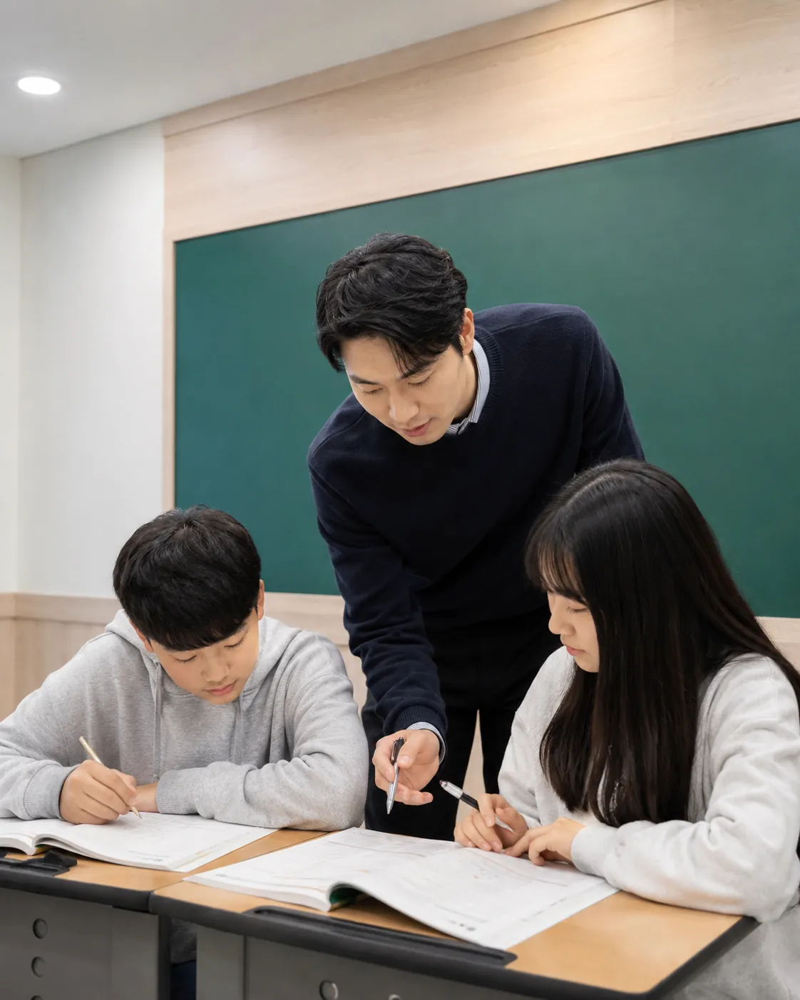

OLYMPIAD · KOI
정보올림피아드
정보올림피아드 유형과 심화 문제로 대회 경쟁력을 체계적으로 준비합니다.
COMPUTER SCIENCE
단순한 코딩 체험이 아닙니다. 논리·알고리즘·문제해결을 중심으로 한 정보과학 교육으로, 정보올림피아드(KOI)까지 이어지는 실력을 만듭니다.
OLYMPIAD · KOI
정보올림피아드 유형과 심화 문제로 대회 경쟁력을 체계적으로 준비합니다.
ALGORITHM
문제를 구조화하고 효율적으로 해결하는 알고리즘적 사고를 훈련합니다.
PROGRAMMING
생각한 해법을 코드로 정확하게 구현하는 프로그래밍 역량을 기릅니다.
PROBLEM SOLVING
발견에서 해결까지, 논리와 사고력 중심의 문제해결 과정을 완성합니다.

논리적 사고를
알고리즘으로 확장합니다.